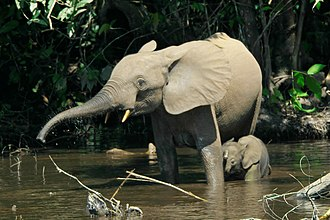
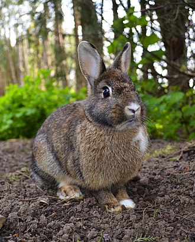
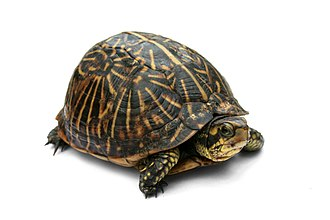

| Herbivore |
Forest elephants |
Loxodonta cyclotis |
Humid/ tropical forests (West Africa, Congo) |
They don't have great eyesight, so they rely on smell and hearing
vibrations in the ground
|
 |
| Rabbits |
Oryctolagus cuniculus |
All over the world. Wild, domesticated livestock, or pets. |
Their ears are essential for thermoregulation. |
 |
| Omnivores |
Turtles |
Cryptodira |
On most continents, and even in the ocean. |
There are 360 living or recently extinct species of turtles. |
 |
| Monkeys |
Infraorder simiiformes |
Africa/ Asia or the tropic of Central and South America |
Classified into old world and new world species |
 |
| Carnivores |
Domestic cats |
Felis catus |
Mainly as pets in homes, farms, or wild (feral) |
Over 220 million are owned as pets, and 480 million are wild
worldwide
|
*this is my cat, Belle
|
| Polar bear |
Ursus martimus |
Arctic |
Are closely related to brown bears and can even cross breed |
 |
| Dolphin |
Delphinidae |
Warm water, tropic zones |
Dolphins play games and even use games in teams to trap their food
|
 |